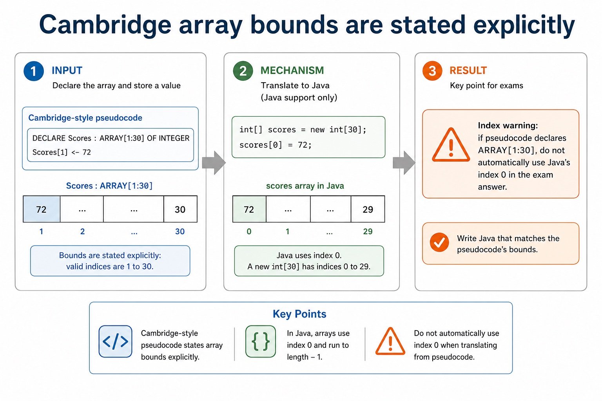
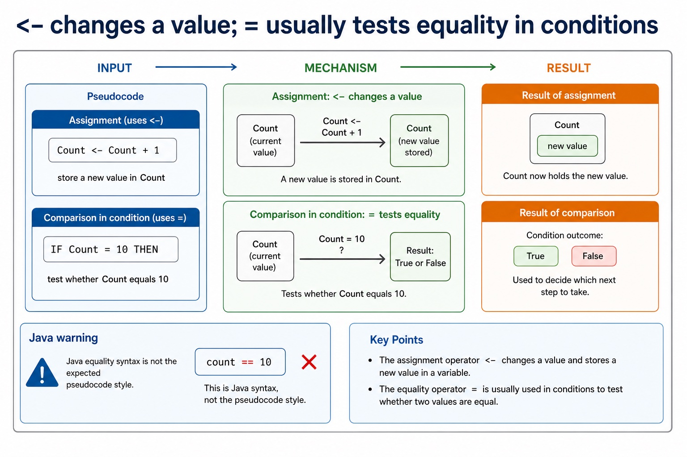
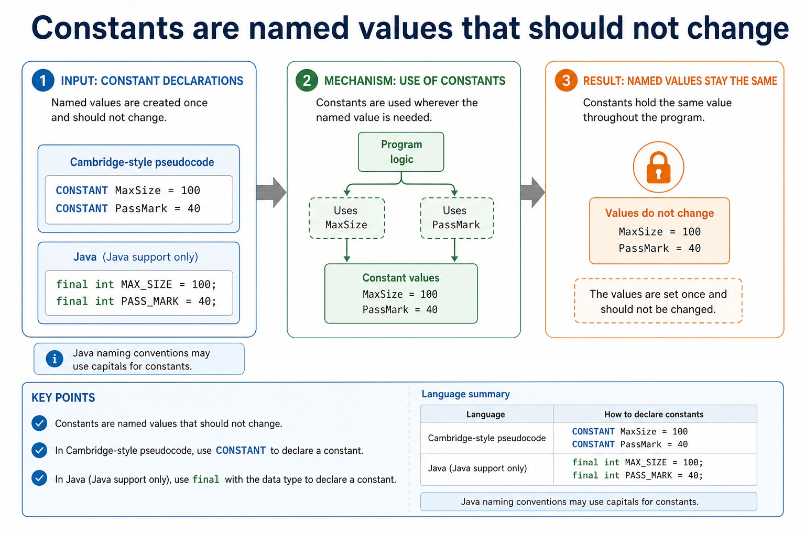
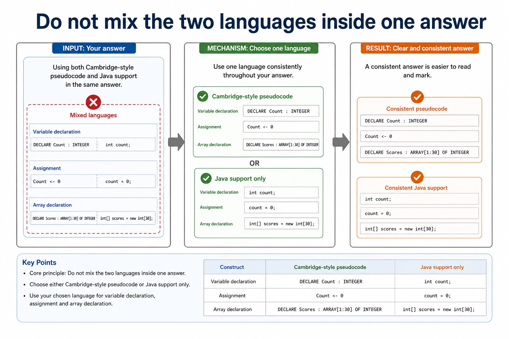
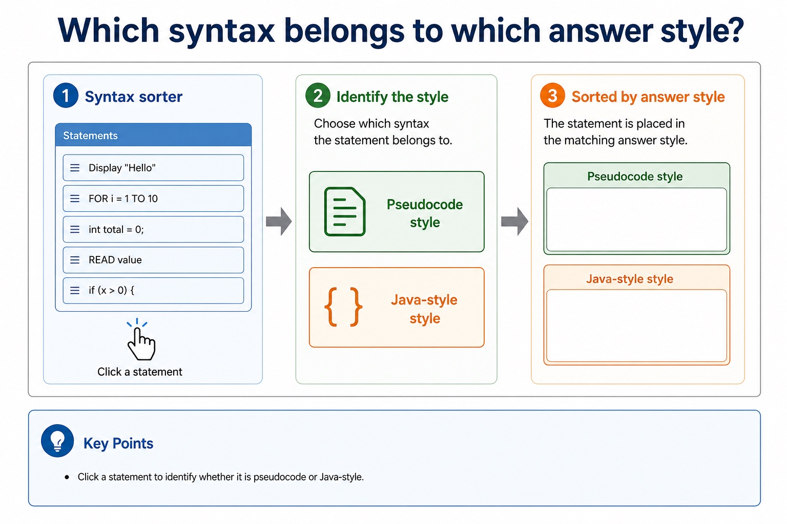
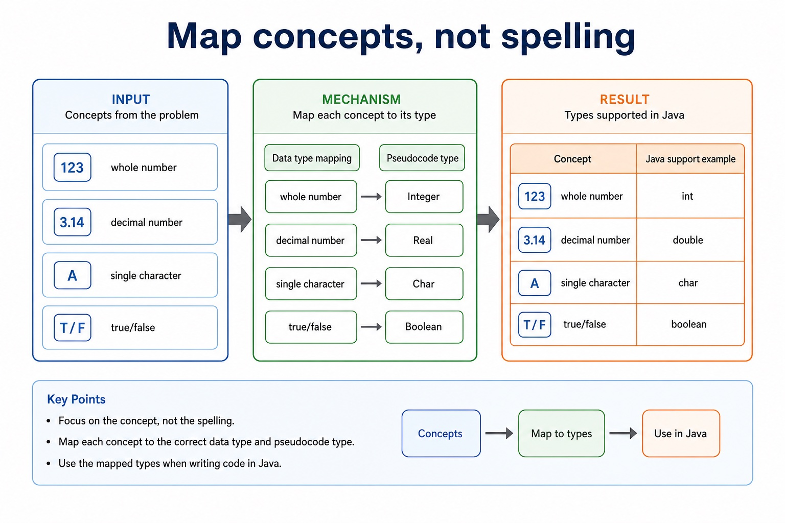
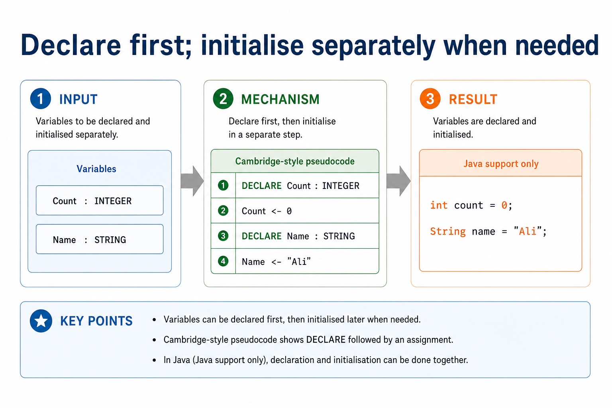

Cambridge AS9618 | Paper 2 | Section 10: Data types and structures
Cambridge data types and declarations
Flexible-depth lesson
S10.01 | Learn from the diagrams, test the method, then choose the practice you need.
Choose a Quick, Full or Deep route
Quick route
Use the diagnostic, learning objectives, first worked example and foundation question. Stop once the learner can explain the central distinction accurately.
Full route
Use every knowledge-point material set, the worked method, the terminology check and all questions.
Deep route
Add the prerequisite refresher, ask learners to connect the concept checklist, discuss the labelled extension and complete a transfer question without a model answer.
Part 1 | optional depth
Prerequisite knowledge and quick diagnostic
Recall the main conclusion from Lesson 054: Integrated algorithm design from a word problem.
Give one accurate definition or method step before continuing. If it is missing, revisit only that prerequisite.
Part 2 | knowledge-point material sets
Learn each point through visuals
Follow the map, the three-part explanation and the concrete cue. Open precise wording only after the idea is clear.
Open the concept checklist and choose what to teach
integer
real
char
string
Boolean
date
ARRAY
FILE
01
S10.01 · decision
Integer · Real · Char · String
Concept map
integerrealcharstringBooleandateARRAYFILE
See how it works
EvidenceThe Version 2 Notes name integer, real, char, string, Boolean and date, and require the Cambridge pseudocode type names INTEGER, REAL, CHAR, STRING, BOOLEAN, DATE, ARRAY…
ChoiceCambridge pseudocode uses the type names INTEGER, REAL, CHAR, STRING, BOOLEAN, DATE, ARRAY and FILE
ReasonSelect and use appropriate types for a problem solution
S10.01 diagrams
1 / 5
01
Diagram · 1 of 5
The eight Cambridge pseudocode type names
Open text transcript
Cambridge pseudocode uses INTEGER, REAL, CHAR, STRING, BOOLEAN and DATE for scalar values.
The Version 2 Notes also name ARRAY and FILE among the pseudocode data types.
Select a type from the value's meaning and required operations; numeric-looking identifiers may still require STRING.
02
Process · 2 of 5
Core AS-level data types
Open text transcript
INTEGER stores whole numbers, while REAL stores values that may contain a fractional part.
CHAR stores one character and STRING stores a sequence of characters.
BOOLEAN stores TRUE or FALSE, and DATE stores a calendar date.
03
Diagram · 3 of 5
Cambridge array bounds are stated explicitly

Open text transcript
Cambridge-style pseudocode
DECLARE Scores : ARRAY[1:30] OF INTEGER
Scores[1] <- 72
Java support only
int[] scores = new int[30];
scores[0] = 72;
Index warning: if pseudocode declares ARRAY[1:30] , do not automatically use Java's index 0 in the exam answer.
04
Comparison · 4 of 5
Use the scenario, not the surface appearance
Open text transcript
INTEGER stores whole numbers and REAL stores values that may have a fractional part.
Both INTEGER and REAL values can be used in arithmetic.
First decide whether a value is numeric, then choose INTEGER for whole-only values or REAL when fractions are possible.
05
Comparison · 5 of 5
Question-supplied functions versus Java methods
Open text transcript
SPLIT and STRINGTOINTEGER are not standard functions in the Cambridge pseudocode guide; this example uses signatures supplied by the question.
FUNCTION SPLIT(Line : STRING, Delimiter : CHAR) RETURNS ARRAY OF STRING; its first returned element is at index 1.
FUNCTION STRINGTOINTEGER(Value : STRING) RETURNS INTEGER.
Java split and parseInt are support examples only and use different syntax and zero-based array indexes.
Open precise syllabus wording
Understand integer, real, char, string, Boolean and date types and Cambridge pseudocode type names.
Select and use appropriate types for a problem solution. The Version 2 Notes name integer, real, char, string, Boolean and date, and require the Cambridge pseudocode type names INTEGER, REAL, CHAR, STRING, BOOLEAN, DATE, ARRAY and FILE.
Supporting diagram library
1 / 9
01
Diagram · 1 of 9
When built-in types are not descriptive enough
Open text transcript
TYPE TStudent
Fields of different data types are declared between TYPE and ENDTYPE.
DECLARE Student1 : TStudent
02
Diagram · 2 of 9
A type controls meaning and valid operations
Open text transcript
A data type determines which operations are meaningful for a stored value.
A BOOLEAN can control a decision and a DATE can be compared with another date.
Close every structured IF example with ENDIF.
Choosing the correct type does not replace validation against the problem's allowed range.
03
Diagram · 3 of 9
<- changes a value; = usually tests equality in conditions

Open text transcript
Assignment versus comparison
Pseudocode
Count <- Count + 1
store a new value in Count
IF Count = 10 THEN
test whether Count equals 10
Java warning
count == 10
04
Diagram · 4 of 9
Constants are named values that should not change

Open text transcript
Constants
Cambridge-style pseudocode
CONSTANT MaxSize = 100
CONSTANT PassMark = 40
Java support only
final int MAXSIZE = 100;
final int PASSMARK = 40;
Java naming conventions may use capitals for constants. Cambridge pseudocode credit comes from clear constant declaration and use.
05
Diagram · 5 of 9
Do not mix the two languages inside one answer

Open text transcript
Core principle
Cambridge-style pseudocode
Java support only
Variable declaration
DECLARE Count : INTEGER
int count;
Assignment
Count <- 0
06
Diagram · 6 of 9
Record declarations use TYPE and ENDTYPE
Open text transcript
Cambridge-style pseudocode
TYPE TStudent
DECLARE Name : STRING
DECLARE Mark : INTEGER
DECLARE Student1 : TStudent
Java support only
class Student {
String name;
07
Diagram · 7 of 9
Which syntax belongs to which answer style?

Open text transcript
Syntax sorter
Click a statement to identify whether it is pseudocode or Java-style.
08
Diagram · 8 of 9
Map concepts, not spelling

Open text transcript
Data type mapping
Pseudocode type
Java support example
whole number
decimal number
single character
true/false
09
Diagram · 9 of 9
Declare first; initialise separately when needed

Open text transcript
Variables
Cambridge-style pseudocode
DECLARE Count : INTEGER
Count <- 0
DECLARE Name : STRING
Name <- "Ali"
Java support only
int count = 0;
Apply the idea
Worked method
01Choose types for a booking
02Use STRING for BookingCode because it may contain letters or leading zeroes; DATE for VisitDate; INTEGER for TicketCount; REAL for TotalCost; CHAR for a one-letter Zone; BOOLEAN for HasPaid; ARRAY for a…
Open precise terminology and exam facts
Select and use appropriate types for a problem solution. The Version 2 Notes name integer, real, char, string, Boolean and date, and require the Cambridge pseudocode type names INTEGER, REAL, CHAR, STRING, BOOLEAN, DATE, ARRAY and FILE.
Select a type from the meaning and operations required by the problem. INTEGER stores whole numbers, REAL stores values that may contain a fractional part, CHAR stores one character, STRING stores a sequence of characters, BOOLEAN stores TRUE or FALSE, and DATE stores a calendar date.
Cambridge pseudocode uses the type names INTEGER, REAL, CHAR, STRING, BOOLEAN, DATE, ARRAY and FILE. ARRAY and FILE describe structured or persistent data; their declarations also state an element type, bounds or file usage as required by the problem.
An identifier that contains digits is not automatically INTEGER. Codes, telephone numbers and identifiers with leading zeroes normally use STRING because arithmetic is not required. Type selection does not replace validation of permitted values.
Beyond syllabus / 延伸知识（不要求背诵）
programming libraries often provide tested ADT implementations, but the exam expects you to understand their behaviour and selection.
Part 3 | select by learner need
Practice by question type
justifyevaluatefoundation8 marks
Question 1. Select and justify suitable Cambridge types for CustomerName, MiddleInitial, DateJoined, ItemCount, MeanScore, IsActive, twenty marks and data that must remain after the program ends.
Show answer and marking guidance
Answer: STRING for CustomerName; CHAR for MiddleInitial; DATE for DateJoined; INTEGER for ItemCount; REAL for MeanScore; BOOLEAN for IsActive; ARRAY with a numeric element type for twenty indexed marks; FILE for persistent data, with justifications linked to meaning or use
Marking guidance: Do not select a numeric type merely because an identifier contains digits, and do not use STRING as a generic replacement for DATE, CHAR or numeric values that require their defined operations.
Common error: For the command word justify, perform that exact action; do not replace it with an unrelated fact.
identifyrecallapplication2 marks
Question 2. Identify the eight type names listed in the syllabus Notes.
Show answer and marking guidance
Answer: INTEGER, REAL, CHAR, STRING, BOOLEAN, DATE, ARRAY and FILE.
Marking guidance: Award one mark for each distinct, technically accurate point or method step.
Common error: Do not repeat the same point in different words; each mark needs a separate idea or method step.
suggestexplaintransfer2 marks
Question 3. Suggest a type for 18.75 used in arithmetic.
Show answer and marking guidance
Answer: REAL, because the value has a fractional part.
Marking guidance: Award one mark for each distinct, technically accurate point or method step.
Common error: Do not copy the worked example unchanged; transfer the method and check it against the new context.
Related past-paper indexes
Reference
Marks
Command word
Question type
9618/21/S/25 Q7(i)
8
write
calculate
9618/21/W/25 Q8(b)
8
define
recall
9618/23/S/25 Q7(i)
8
write
write
9618/23/W/25 Q8(a)
8
define
recall
Index only: Cambridge question and mark-scheme wording is not reproduced on this public course page.
Part 4 | close when ready
Summary and exam reminders
Summary
Define cambridge data types and declarations with the exact technical vocabulary expected by the syllabus.
Use the lesson method on a fresh context and show the intermediate decision, representation or calculation.
Match the shape of the answer to the command word and the available marks.
Check the final answer against the scenario instead of repeating a memorised sentence.
Common error to correct
Students often confuse the identifier of the whole structure with one element. Correction: access requires an index or field name.
Exam technique
Follow the command word: state gives a fact; explain links a cause to a consequence; compare covers both sides.
Match the number of independent points or method steps to the available marks.
For cambridge data types and declarations, use the exact technical term before applying it to the scenario.